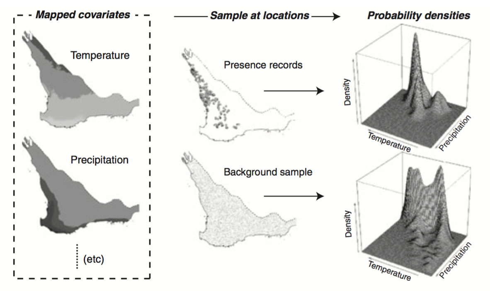

Habitat Suitability Map
This 3-D map and its two dimensional subset show simulated Ebola virus habitat suitability. Environmental layers are first turned into principal components (eign-vectors). The algorithm uses the types of conditions in which Ebola is currently known to have transmitted to humans to predict other, similar climatic regions. Future study could project this onto a broader area.

...